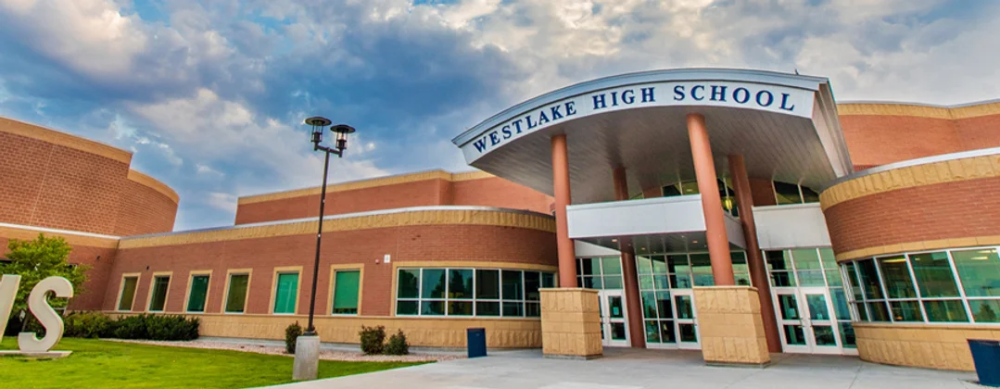
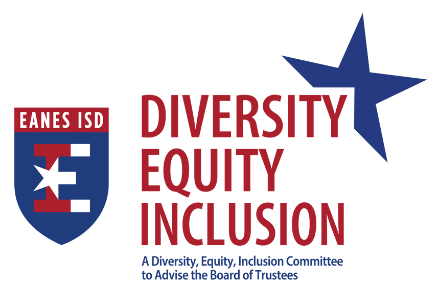
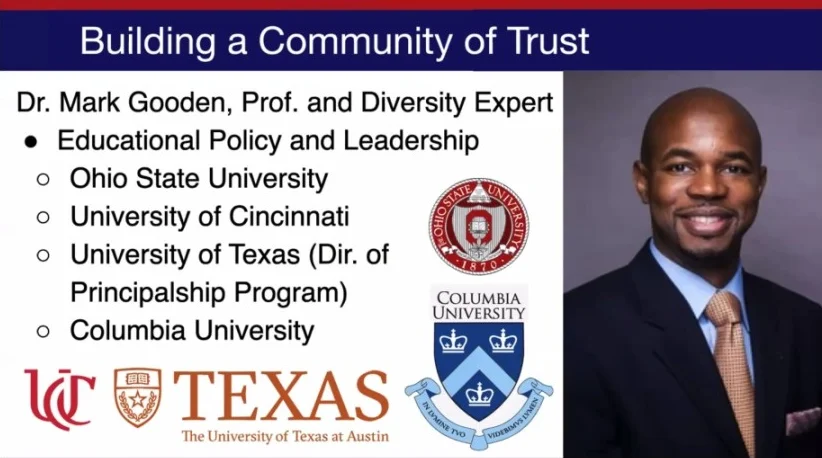
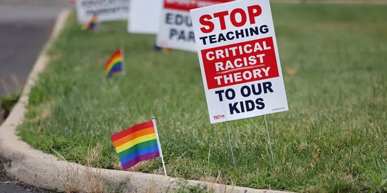

Politics
November 2, 2021
The Eanes school district’s new diversity, equity and inclusion program has been experiencing some community pushback a year after its launch, and fear of change might be the reason, said James Spradley, vice president of the district’s board of trustees.
“We start talking about changing something and they say, ‘We’re one of the top public school districts in the nation right now. Why would you want to change anything?’” Spradley said.
The initiative came as a response to a petition for change signed by over 1,000 students, staff and parents in May 2020 after the killing of George Floyd prompted many schools and other institutions to better address racism and social justice issues. The petition detailed incidents of racism experienced by former and current students in the majority white school district.
Eanes started the program in July 2020 to enhance racial awareness and cultivate a more understanding environment where all students feel welcomed and accepted. However, some in the community have equated the initiative to critical race theory, which has become a political talking point in Texas and across the nation.
The core idea of critical race theory is that race is a social construct and racism is not just the product of individual prejudice, but rather something embedded in the law and other legal institutions. It is often incorrectly used as a catch-all term for anything related to diversity work.
“People think that if we bring in a diversity, equity and inclusion specialist that has had any exposure to critical race theory, then we are pushing critical race theory in our schools, which is simply not true,” said Heather Sheffield, an Eanes board member.
Sheffield referred to the hiring of DEI consultant Dr. Mark Gooden, a former professor at Columbia University with experience in DEI training for schools. She said parents have pointed to Gooden’s use of critical race theory in his academic work as proof that there is a larger political agenda behind the diversity initiative.
“Anyone who knows anything about critical race theory knows that it is not a K-12 initiative. It is for higher education like grad school and law school. The goal is to make sure we have a safe and supportive environment for kids to learn and thrive in,” Sheffield said.
Parents across the country have launched protests against critical race theory in the classroom, often stating they do not want politics to be brought into public education.
Charles McMichael, a parent in the district, said the board was “sold the bill of goods” on the initiative and that they weren’t told about the “underlying purposes.”
“It is really about indoctrination. It’s about indoctrinating kids and dumbing down our group,” McMichael said. “They’re trying to replace and rewrite history.”
McMichael’s daughter Morgonn, a former Westlake student, also said adding diversity chairs and changing the curriculum is only creating more division.
“When you’re teaching kids to judge others on their skin color and not their character or work ethic and you're telling them ‘If you're white, you're the oppressor, you are inherently racist’ and you are telling minorities they are automatically oppressed, all you’re doing is teaching kids to essentially be more racist,” Morgonn McMichael said.
However, Sheffield said the board is simply trying to support their diverse student body and better equip staff members to handle incidents of racism.
Rebeca Marichalar, who graduated from Westlake in 2018, recalled her experiences with racism at Westlake High School.
“While there was a lot of outwardly racist stuff going on, I think the majority were microaggressions,” Marichalar said.
She spoke specifically about one incident where a dodgeball team of all-white boys named themselves “Gorillas in Paris,” which she said was obviously in reference to the rap song “N-words in Paris” by Jay-Z and Kanye West. Marichalar said the staff did not know it was referencing something bad.
“There was just a lack of awareness and a lack of action. My friend just stood up and left. She couldn’t believe what was going on,” Marichalar said.
Another 2018 graduate from Westlake, Matt Watanabe, cited similar experiences.
“There were definitely a lot of instances in extra curriculars where a lot of derogatory terms were used. I experienced some but I probably witnessed more,” Watanabe said, “Even my brother would hear a lot of stuff from people he knew about him that were pretty offensive.”
When it came to addressing these incidents, Marichalar said the school was good at minimizing the issues and making any discussion about race “digestible for their majority rich, white audience.”
The program is currently focusing on staff training at the high school and middle school level, Spradley said, but they plan to continue into the elementary school level this year.
Despite the division and concerns, the board was satisfied with Gooden’s work and voted unanimously to extend his contract for another year.
Spradley said there are very passionate people on both ends of the issue, and then there is a bigger group in the middle trying to make everyone get along, so they can work together to “keep the district excellent.”
Sheffield said that the division is mostly political and that those who have equated their DEI measures to critical race theory are the ones who have politicized it.
“It’s unfortunate,” she said, “because I feel strongly that our public schools and districts should not have anything to do with partisan politics. It should simply be focusing on what’s best for kids and critical race theory is not something that is happening in K-12 education at Eanes.”